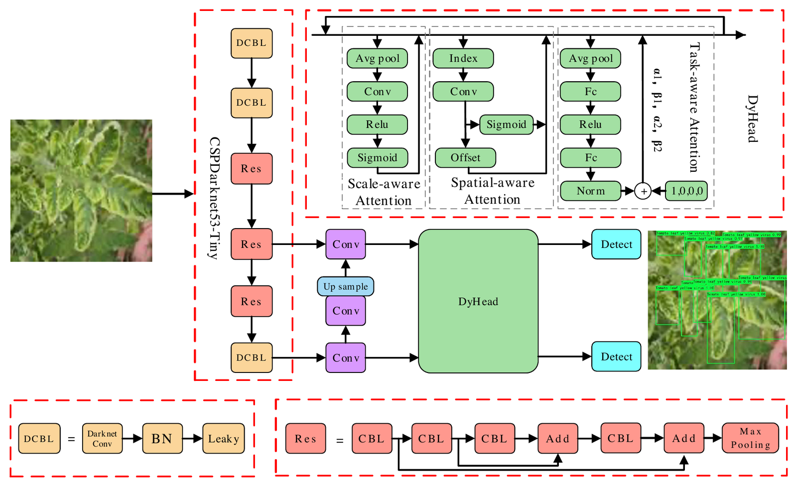

Automatic visual recognition for leaf disease based on enhanced attention mechanism
Yumeng Yao, Xiaodun Deng, Xu Zhang, Junming Li, Wenxuan Sun, Gechao Zhang
PeerJ Computer Science, vol. 10, article e2365 (2024) · Open access, CC BY 4.0
Also indexed in: Semantic Scholar · OpenAlex · dblp · PubMed · PMC · Publisher page

Quick facts
| Authors | Yumeng Yao, Xiaodun Deng, Xu Zhang, Junming Li, Wenxuan Sun, Gechao Zhang |
|---|---|
| DOI | 10.7717/peerj-cs.2365 |
| Task | Detection and classification of tomato leaf diseases, treated as small-target (lesion) recognition |
| Base detector | YOLOv4-tiny (written 'YOLOv4 (tiny)') with a CSPDarknet53-Tiny backbone; images resized to 416 × 416 pixels |
| Attention module | DyHead (Dai et al., 2021): scale-, spatial- and task-aware attention on the detection head; 2 stacked modules, embedding dimension 128 |
| Box regression loss | Focaler-SIoU (Zhang & Zhang, 2024): SIoU plus Focaler-IoU, k = 0, g = 0.95; replaces YOLOv4's default CIoU to emphasise hard samples |
| Dataset | 668 PlantDoc tomato leaf images (7 diseases plus healthy), augmented to 6,012 samples; 9:1 train/test split |
| Metrics | mAP, average detection time per image, per-class AP and F1 at IoU = 0.5 |
| Compared detectors | YOLOv4-tiny (baseline), Faster R-CNN, SSD, YOLOv3, YOLOv7-tiny, YOLOv5 |
| Headline result | 93.64% mAP vs 83.31% for YOLOv4-tiny (+10.3 percentage points); 0.0110 s vs 0.0073 s per image on a GTX 1080 Ti GPU |
| Corresponding authors | Yumeng Yao and Gechao Zhang |
| Journal | PeerJ Computer Science, vol. 10, article e2365 (21 pages); submitted 3 June 2024, accepted 6 September 2024, published 4 November 2024 |
| Open access | Open access under CC BY 4.0; full text also in PubMed Central (PMC11623051) |
| Code and data | Code and processed data on Figshare, doi:10.6084/m9.figshare.27210138.v1 (CC BY 4.0) |
| BibTeX key | yao2024leaf |
Main results
| Setting | Result | Compared with |
|---|---|---|
| PlantDoc tomato leaves, 8 classes; comparison with the base model (Table 3) | mAP = 93.64%; 0.0110 s per image“Our model achieves 93.64% accuracy, which is a 10.3% improvement compared to the YOLOv4 (tiny)/baseline model.” | YOLOv4-tiny baseline: mAP 83.31%, 0.0073 s per image (faster than the proposed model) |
| PlantDoc tomato leaves; comparison with other detectors (Table 3) | mAP = 93.64%; 0.0110 s per image“It even surpasses YOLOv7(tiny) at 91.29% and YOLOv5 at 92.44%, with faster detection speed.” | Strongest other detector YOLOv5: mAP 92.44%, 0.0135 s; YOLOv7-tiny: 91.29%, 0.0114 s |
| DyHead ablation on YOLOv4-tiny, 2 stacked modules, embedding dimension 128 (DyHead table, printed as Table 1) | mAP = 93.17%; 0.0110 s per image“The model achieves a detection accuracy of 93.17%, with a slight reduction in speed.” | Baseline 83.31% at 0.0073 s; 4 modules with dimension 64 reach 93.13% at 0.0160 s |
| Box-loss ablation on YOLOv4 with DyHead (IoU table, printed as Table 2) | Focaler-SIoU: mAP = 93.64%; 0.0110 s per image“the integration of Focaler-SIoU elevates the average detection accuracy of the method to 93.64%” | Default CIoU 93.17%; SIoU without Focaler 93.27%; CIoU with Focaler 93.15% |
| Per-class results, tomato yellow leaf curl virus (called 'tomato leaf flavivirus' in the text), IoU = 0.5 (Tables 4 and 5) | AP = 65.23%; F1 = 0.63 (still the lowest class; all other classes have AP of 95.26% or higher)“for tomato leaf flavivirus, the proposed algorithm exhibits the highest increase in AP value, with an improvement of about 17.9% compared to the YOLOv4 (tiny)/baseline model” | YOLOv4-tiny baseline: AP 47.31%, F1 0.45 |
Quoted text is verbatim from the paper.
Key points
- Stacking 2 DyHead modules (embedding dimension 128) on YOLOv4-tiny raises mAP on PlantDoc tomato leaves from 83.31% to 93.17%, while per-image time grows from 0.0073 s to 0.0110 s.
- Replacing the default CIoU box loss with Focaler-SIoU (SIoU plus Focaler-IoU, k = 0, g = 0.95) lifts mAP to 93.64% at the same 0.0110 s; SIoU alone gives 93.27%.
- The final model has higher mAP and lower per-image time than Faster R-CNN (88.26%), SSD (88.78%), YOLOv3 (90.09%), YOLOv7-tiny (91.29%) and YOLOv5 (92.44%), but is slower than YOLOv4-tiny.
- Tomato yellow leaf curl virus, the lowest-AP class, gains most: AP rises from 47.31% to 65.23% and F1 from 0.45 to 0.63; the other seven classes reach 95.26 to 99.87% AP.
- In a qualitative lighting test (Fig. 4: low, normal and bright light), YOLOv4-tiny missed lesions in all three settings that the proposed model detected.
Abstract
Recognition methods have made significant strides across various domains, such as image classification, automatic segmentation, and autonomous driving. Efficient identification of leaf diseases through visual recognition is critical for mitigating economic losses. However, recognizing leaf diseases is challenging due to complex backgrounds and environmental factors. These challenges often result in confusion between lesions and backgrounds, limiting information extraction from small lesion targets. To tackle these challenges, this article proposes a visual leaf disease identification method based on an enhanced attention mechanism. By integrating multi-head attention mechanisms, this method accurately identifies small targets of tomato lesions and demonstrates robustness in complex conditions, such as varying illumination. Additionally, the method incorporates Focaler-SIoU to enhance learning capabilities for challenging classification samples. Experimental results showcase that the proposed algorithm enhances average detection accuracy by 10.3% compared to the baseline model, while maintaining a balanced identification speed. This method facilitates rapid and precise identification of tomato diseases, offering a valuable tool for disease prevention and economic loss reduction.
Frequently asked questions
Does the method have a name?
No. The paper does not name its model: the result tables call it 'Ours', and the loss ablation rows read 'YOLOv4 with DyHead'. The conclusion describes it as a real-time tomato disease recognition algorithm based on YOLOv4 (tiny).
What is the 'enhanced attention mechanism' in this paper?
It is DyHead (Dai et al., CVPR 2021), a module added to strengthen the YOLOv4-tiny detection head. The paper's 'multi-head attention' refers to DyHead's scale-aware, spatial-aware and task-aware attention. The final model stacks 2 DyHead modules with embedding dimension 128.
Which dataset was used?
The paper uses 668 tomato leaf images from the PlantDoc dataset (cited in the text as MakeML's 'Leaf Type Detection'), covering leaf mold, bacterial spot, Septoria leaf spot, tomato yellow leaf curl virus, early blight, tomato mosaic virus, late blight and healthy leaves. Random data augmentation with lighting and rotation variations expanded them to 6,012 images, split 9:1 into training and test sets.
How accurate and how fast is it?
It reaches 93.64% mAP against 83.31% for the YOLOv4-tiny baseline (+10.3 percentage points), at 0.0110 s per image versus 0.0073 s for the baseline (GTX 1080 Ti GPU, Core i7 CPU). It also has higher mAP and lower per-image time than Faster R-CNN (88.26%), SSD (88.78%), YOLOv3 (90.09%), YOLOv7-tiny (91.29%) and YOLOv5 (92.44%).
What does Focaler-SIoU contribute?
Focaler-SIoU replaces YOLOv4's default CIoU box-regression loss. It combines SIoU, which adds angle, distance and shape costs, with Focaler-IoU, which remaps IoU over an interval (k = 0, g = 0.95) to emphasise hard samples. On the DyHead model it raises mAP from 93.17% (CIoU) to 93.64% at the same 0.0110 s per image.
Are the code and data available?
Yes. The code and processed data are on Figshare (doi:10.6084/m9.figshare.27210138.v1, CC BY 4.0). The original PlantDoc dataset is on GitHub at pratikkayal/PlantDoc-Object-Detection-Dataset.
How do I cite this paper?
Cite it as: Yao, Y., Deng, X., Zhang, X., Li, J., Sun, W., & Zhang, G. (2024). Automatic visual recognition for leaf disease based on enhanced attention mechanism. PeerJ Computer Science, 10, Article e2365. https://doi.org/10.7717/peerj-cs.2365 BibTeX is available at https://codezx6.github.io/papers/leaf-disease-attention.html#cite and in https://codezx6.github.io/publications.bib.
中文摘要
基于增强注意力机制的叶片病害自动视觉识别
复杂背景与光照变化等环境因素易导致番茄叶片病斑与背景混淆、小病斑信息难以提取。本文以 YOLOv4-tiny 为基础模型，在检测头中引入融合尺度、空间与任务感知注意力的 DyHead 模块，并以 Focaler-SIoU 替代默认的 CIoU 边框损失，加强对困难样本的学习。在 PlantDoc 番茄叶片数据（7 种病害加健康叶片）上，mAP 由基线的 83.31% 提升至 93.64%，单张图像检测耗时 0.0110 秒。
关键词：叶片病害识别；番茄病害检测；注意力机制；小目标检测；YOLOv4-tiny；DyHead
Keywords
visual recognition leaf disease identification attention mechanism tomato leaf disease object detection YOLOv4-tiny DyHead computer vision
Also referred to as: YOLOv4 with DyHead; YOLOv4-tiny tomato disease recognition; real-time tomato disease recognition; visual leaf disease identification; tomato leaf disease recognition.
Research area map and related search terms
Field path (broad to narrow): artificial intelligence › computer vision › object detection › agricultural computer vision › plant disease detection › tomato leaf disease detection › attention-enhanced lightweight detection › this paper
Task
plant disease detection plant disease recognition tomato leaf disease detection crop disease identification small object detection real-time object detection
Method
YOLOv4-tiny DyHead (dynamic head) scale-aware, spatial-aware and task-aware attention Focaler-SIoU loss
Datasets
PlantDoc
中文
植物病害检测 番茄叶片病害识别 农作物病害识别 小目标检测 目标检测 YOLO
Related areas
precision agriculture smart farming plant phenotyping image classification YOLO detectors lightweight detectors edge deployment attention mechanisms bounding-box regression losses data augmentation deep learning in agriculture
Applications
crop disease monitoring early disease warning yield-loss prevention field scouting apps greenhouse monitoring
Related benchmarks (not used in this paper)
PlantVillage PlantDoc (full) Tomato leaf disease (Kaggle) IP102
中文 (扩展)
农业计算机视觉 精准农业 智慧农业 植物表型 作物病害监测 病害早期预警 YOLO 轻量化检测 边缘部署 注意力机制 数据增强 深度学习农业应用
Terms are grouped by role. "Related areas", "Applications" and "Related benchmarks (not used in this paper)" describe the surrounding field, not results of this paper. See the site-wide research area map.
Related papers
Object detection
- URMDet-SimFire: Trustworthy multimodal detection with uncertainty and reliability modeling for fire and smoke analytics (Array, vol. 31, article 101124, 2026)
Other topics
- DUET: Unified Dual-Space Emotion Control for Diffusion and Flow-Matching Driven Text-to-Speech (2026)
- PhysioSER: Learning Physiology-Informed Vocal Spectrotemporal Representations for Speech Emotion Recognition (2026)
- DSTCN: Exploiting dynamic spatio-temporal correlations for origin-destination demand prediction (2026)
- S2CMEN: A Mutually Enhancement Network for Superpixel Segmentation and Classification of Hyperspectral Image (2025)
- MR-UFP: Enhancing urban flow prediction via mutual reinforcement with multi-scale regional information (2025)
- BiST-IF: Enhancing origin–destination flow prediction via bi-directional spatio-temporal inference and interconnected feature evolution (2025)
- S3CFSL: Spatial-Spectral–Semantic Cross-Domain Few-Shot Learning for Hyperspectral Image Classification (2024)
- ST-FCL: Spatio-temporal fusion and contrastive learning for urban flow prediction (2023)
- MC-STL: Mask- and Contrast-Enhanced Spatio-Temporal Learning for Urban Flow Prediction (2023)
Cite this paper
@article{yao2024leaf,
title = {Automatic visual recognition for leaf disease based on enhanced attention mechanism},
author = {Yao, Yumeng and Deng, Xiaodun and Zhang, Xu and Li, Junming and Sun, Wenxuan and Zhang, Gechao},
journal = {PeerJ Computer Science},
year = {2024},
volume = {10},
pages = {e2365},
doi = {10.7717/peerj-cs.2365},
issn = {2376-5992},
url = {https://doi.org/10.7717/peerj-cs.2365}
}Yao, Y., Deng, X., Zhang, X., Li, J., Sun, W., & Zhang, G. (2024). Automatic visual recognition for leaf disease based on enhanced attention mechanism. PeerJ Computer Science, 10, Article e2365. https://doi.org/10.7717/peerj-cs.2365